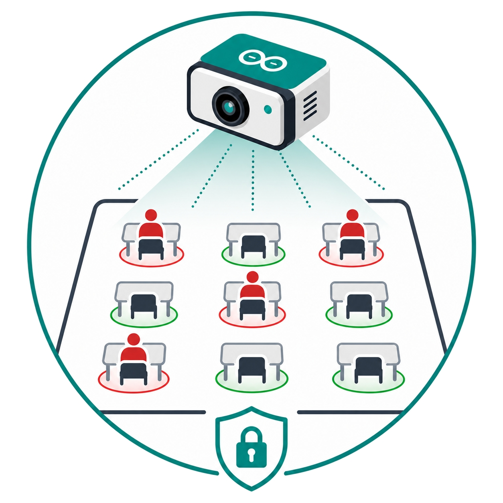
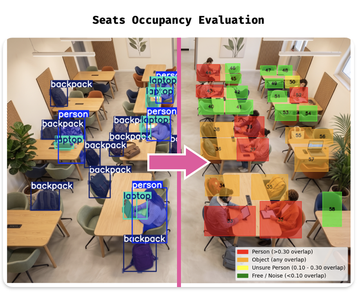
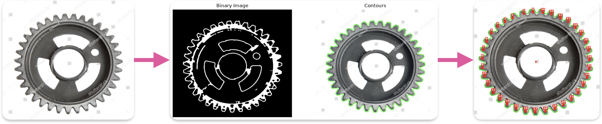

P.I.E.N.A.H. (Private Image Evaluation Network on Arduino Hardware) is a Edge AI solution engineered to analyze and monitor spatial occupancy in classroom environments using computer vision techniques.

It leverages a YOLO-based segmentation model to detect and segment specific objects (people, laptops, backpacks) and maps these detections against predefined geometric seat masks to precisely calculate the seats availability. Deployed entirely on an Arduino Uno Q Board, the system ensures high scalability, cost-efficiency, and strict data privacy by executing all visual processing locally, eliminating the need for cloud infrastructure.
Competed in multiple student challenges during the "Image Processing and Computer Vision" university course. The challenges involved diverse domains, starting from low-level image processing techniques to advanced Deep Learning approaches.
- Challenge 1 - Image Restoration: Removed artificial noise from images by leveraging Fourier Frequency and Spatial Domain Filtering.
- Challenge 2 - Industrial Vision: Detected and counted mechanic gear teeth using Image Segmentation, alongside Edge and Contour Detection.
- Challenge 3 - Ink Detection: Participated in the Vesuvius Challenge to detect ink from 3D X-ray scans of ancient papyrus scroll fragments. Designed, implemented, and trained a U-Net based Autoencoder with a ResNet encoder.

Consistently achieved top-3 results across all challenges.